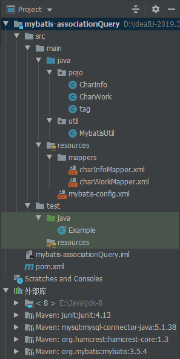
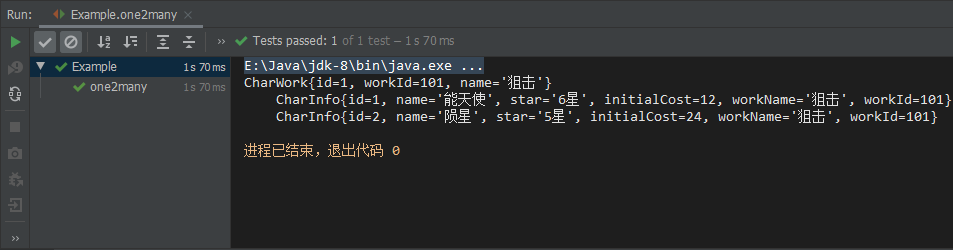
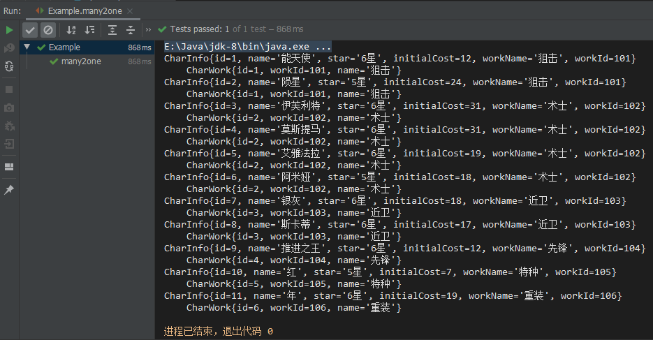
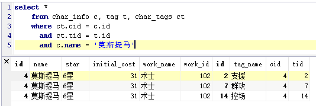
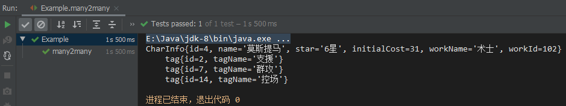
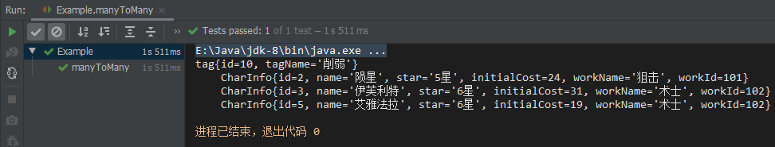

前言：需求分析
在项目的数据查询中，最简单的是查询一个表里的内容，但是最常用的却是多表关联查询。比如
- 根据某个职业的分类查询这个分类下所有角色(对象)的相关信息
- 根据多个角色的信息查询它们各自所属的职业分类
- 根据某个角色的标签查询这个标签下的角色，或者根据这个角色查询他有哪些标签
以上例子依次对应了数据查询中一对多、多对一和多对多的情况，接下来将通过一个简单的项目介绍如何在mybatis里如何配置与使用这些多表关联查询
一、创建项目
1.创建数据表&插入数据
角色表
1 | CREATE TABLE `char_info` ( |
职业分类表
1 | CREATE TABLE `char_work` ( |
2.项目结构

本项目使用IntelliJ IDEA创建，并使用maven管理所使用的相关库，如果不使用maven，请注意手动导入相关jar包：mybatis、mysql-connector-java。junit可选，仅作测试用(使用junit必须依赖hamcrest-core包)
3.初始化项目
3.1配置mybatis
1 |
|
设置mapUnderscoreToCamelCase为true开启驼峰命名规则转换，即数据表的字段名xxx_yyy转换成java的字段名xxxYyy
此处使用的mysql连接驱动包是5.x版本的，如果使用8.x注意更改驱动名称值为com.mysql.cj.jdbc.Driver，同时url需要指定参数useSSL=false&serverTimezone=UTC
3.2封装sql会话访问工具类
在util包下新建MybatisUtil类
1 | private static SqlSessionFactory sqlSessionFactory = null; |
3.3创建java对象类
在pojo包下新建与数据表相关的java对象和字段信息，并生成Getter与Setter方法，同时重写toString方法方便打印信息。本项目仅使用了查询功能，所以不用生成带参构造方法
二、一对多
1.逻辑梳理
首先理清关系，一对多即一个对象关联多个对象，那么就需要使用同一个字段值来产生关系，所以此处char_info表引用了char_work表的work_id。在查询的时候逻辑顺序如下：
- 在char_work表中通过name值(也可以使用表里其它的唯一值)查询相关的work_id
- 然后返回一个结果映射，在结果映射里通过work_id在char_info里查询到对应的char_info数据
- 返回的结果映射同时拥有char_work的信息和其相关的一组char_info数据
所以我们需要在CharWork对象里增加一个List<charInfo>属性并生成Getter与Setter方法
2.charWorkMapper映射文件设置
1 | <mapper namespace="charWork"> |
此处resultMap的type即“一”的java对象类型，子标签id为主键，需要关联的属性和不符合驼峰命名转换规则的属性使用result子标签进行对应，property为java属性名，column为数据表字段名。
collection的select值为charInfo命名空间(映射文件)里需要关联查询的select语句id
3.charatersMapper映射文件设置
1 |
|
此处设置work_id值查询charInfo数据即可，无需手动调用
4.实例测试
test\java包里新建测试类
1 |
|
运行结果如下

三、多对一
1.逻辑梳理
多对一体现在查询结果上并不是多个实体对象显示对应的一条分类对象信息，而是每个实体对象后面显示其关联的分类对象信息，显示的“一”可以显示很多条重复的，但都是同一类对象，所以逻辑顺序如下：
- 从char_info表查询所需的一组char_info信息
- 然后在结果映射里通过这一组char_info的work_id到char_work表里逐条查询所需的char_work信息
- 返回的结果映射信息就有了char_info信息以及对应的char_work信息
那么很显然的我们需要在char_info的java对象里增加一个charWork对象属性，并生成相应的Setter和Getter方法
2.charInfoMapper新增设置
1 | <!--多对一结果映射：多名干员对应符合条件的一类职业--> |
此处resultMap使用association(映射)子标签来实现多对一的查询，原理和一对多相似，不过和collection不同的是association只能映射一个对象而不是一组对象的集合，同时依旧需要把传递的work_id属性进行result对应，否则CharInfo对象会获取不到work_id的值
3.charWorkMapper新增设置
1 | <select id="selectCharWorkByWorkId" parameterType="int" resultType="pojo.CharWork"> |
“一”的一边只需要增加一条sql语句就行了
4.实例测试
在测试类里新建一个many2one测试方法
1 | public void many2one(){ |
这里取出全部的CharInfo及其charWork信息，所以就不需要传递参数了，同时变量声明是先集合，再对应的单个对象，和一对多的使用方法是相反的
运行结果：

四、多对多
虽然mybatis可以使用association和collection标签专门用于对多个相关实体类数据进行级联查询，但仍不支持多个相关实体类数据的级联保存和级联删除操作。因此在进行实体类多对多映射表设计时，需要专门建立一个关联对象表对相关实体类的关联关系进行描述，所以多对多的处理可视为双向的一对多表查询
1.增加数据表
tag
1 | CREATE TABLE `tag` ( |
char_tags
1 | CREATE TABLE `char_tags` ( |
2.增加对象与字段
pojo包下新增tag类与相关属性，对应tag表，同时增加List
3.增加映射配置
charInfoMapper
1 | <!--多对多结果映射：查询某个干员所对应的多个标签--> |
使用SQL语句对应来实现多表关联的查询，如果不理解这条select语句，可以代入参数在mysql里观察查询结果：

因为使用了*取出了所有表的所有列，会有列名重复的情况，所以在result或id里不能指定property="id" column="id"这样的参数映射，否则只会映射第一次出现的数据，后面重复列名的数据无法映射。同时这里需要将相关表(除了关系表)所对应的java对象类的属性完整映射，重复的列名一般来说就是关联的字段信息了，所以可以如上使用<id property="id" column="cid"/>这样的方式来映射。
新增tagMapper映射文件
1 | <!--多对多结果映射：查询某个标签所对应的多个干员--> |
逆向的关系映射与上面原理相同，将属性/字段反向描述即可，注意select语句的参数，以及在mybatis配置文件里增加映射文件<mapper resource="mappers/tagMapper.xml"/>
4.实例测试
正向：
1 |
|

逆向：
1 |
|
